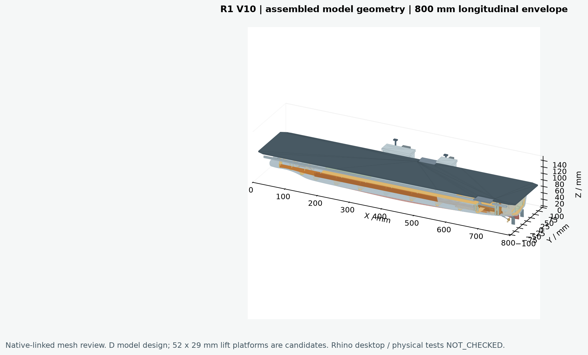
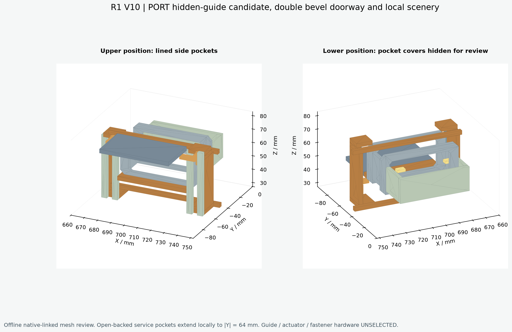
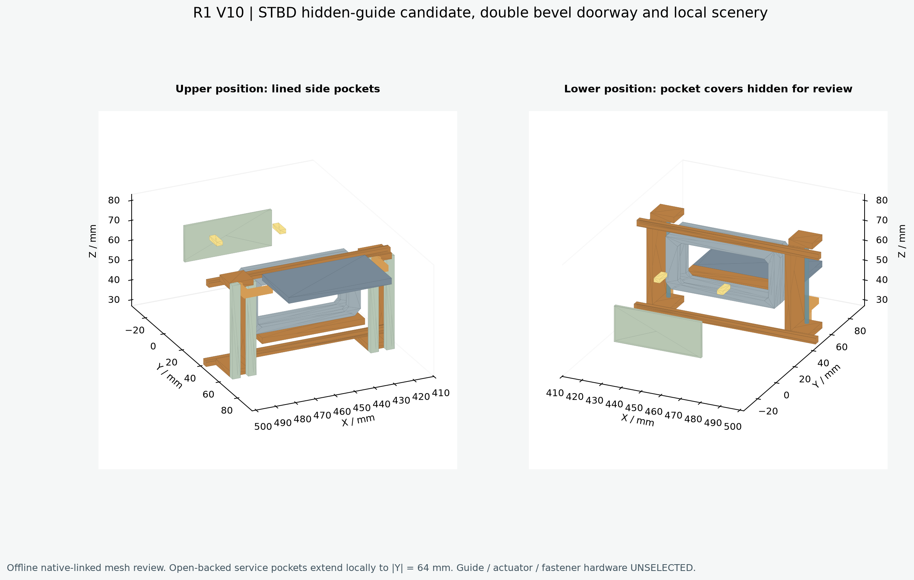
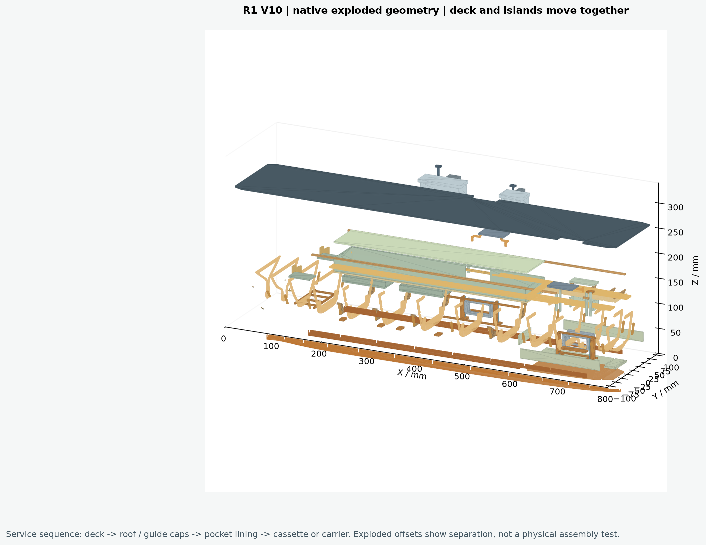
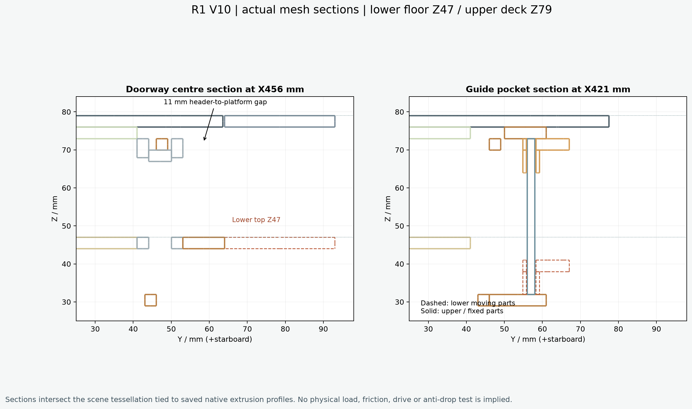
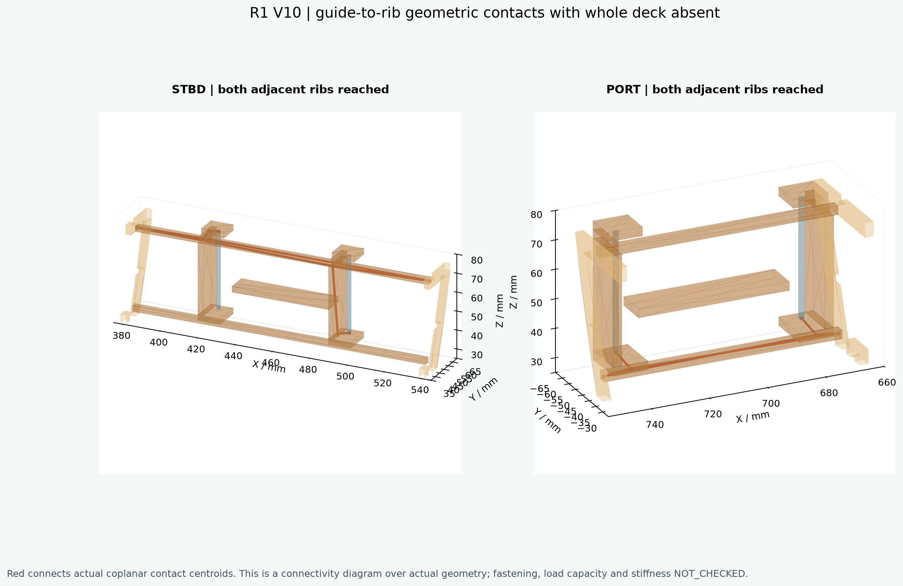
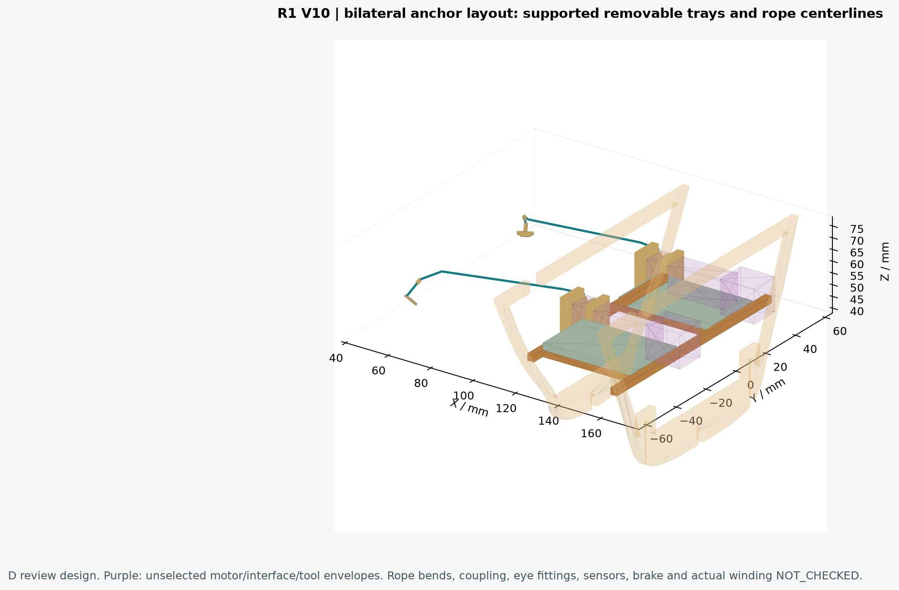
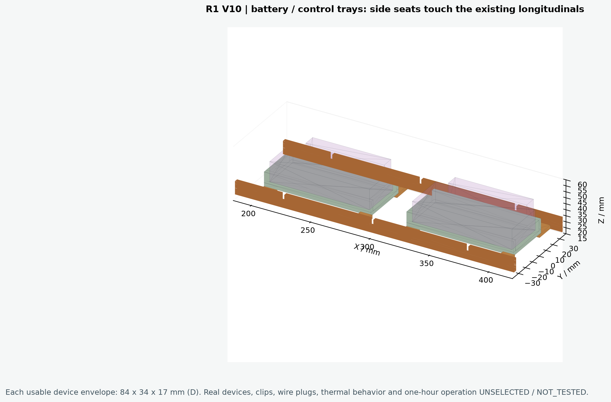

# 076 · R1 V10 原生模型评审记录 日期：2026-10-19。状态：**可供人工结构与外形评审；不可直接切割或宣称实物机构可用。** 本版落实用户选定的R1方案和“左右两侧都布置”锚机。总长约束800mm；基线V9和历史网站保留。交付总装、骨架、爆炸、右舷样段四份Rhino文件。图像来自原生关联场景的离线网格视图，不是Rhino桌面截图。 ## 本次改变与几何依据 - 两侧升降导向改为可检修侧袋；导杆、滑座、连接臂和固定承力框为D模型设计。侧袋局部延伸至|Y|64，未声称完全藏入原有母型内部。 - 双层倒角门框和带顶/侧壁的短通道；入口不用蒙皮封住。右舷接主机库，左舷接坞舱上方独立可拆局部场景。内景顶梁与灯具可拆，无真实076内部结构还原的主张。 - 平台改为**52×29mm候选**，V9的52×43mm只作历史比较。32mm行程暂定；上位顶Z79与甲板齐平，下位顶Z47与阈板齐平。两侧甲板边缺口随之回填至|Y|63.5，平台内侧边|Y|64，实际保存几何间隙0.5mm。 - 通道的验证核心为X向扣除倒角后的区域、Z47..66；不能把名义门框Z47..68解释为全宽21mm净高，局部顶板底Z67限制了实际净高。 - 固定升降框在整甲板移除时仍通过实际共面接触面连接邻近肋骨与纵向构件。此项只证明几何连接，不证明榫槽、紧固或承载能力。 - 左右锚孔旧凹坑背盖打开；各侧加入卷筒、轴、支承、可拆托盘及绳路中心线。锚体是简化D模型占件。卷筒位于X约117..132，电机体预留132..158；整托盘在110/160肋骨之间，避免上提时被肋骨顶拦住。 - 电池和电控各有3mm托盘、侧边围板及四点支承；通过与既有纵梁的实际面接触提供几何支承。名义设备空间各84×34×17mm，硬件未选型；连接器另留侧向空间。 ## 当前数值与验证范围 总装对象数420；原生板件轮廓核对225项。毫米单位、有效原生几何、零Mesh、命名视图与X0..800包络已回读。甲板是3mm厚单块连通板，连双岛整体拆下。 主验证：PASS，静态实体干涉0项，13项连续运动/检修扫掠无已发现干涉；开放船壳采用采样及原母面精确子域核对，不能把它当作封闭实体碰撞证明。历史装饰舰岛内部接触单独保留记录。 系统验证：PASS，两侧卷筒托盘和电池/电控托盘各100mm保守连续上提检查通过；两侧锚体70mm下降对纳入检查的实体无干涉。参考底座顶Z−57时最低净空约34.43mm，实际底座及下放量未冻结。Ø0.4绳路管与纳入检查的实体无干涉；导绳弯曲半径、卷绕、摩擦、连接绳眼与真实收放未验证。 原生模型SHA256：`0352b90959281bf8d2a00da80d84266ee01646c5af7086e7d2d4f017acf0c301`。核查详情见r1_validation.json、systems_validation.json与independent_review.md。数值误差说明生成一致性，不代表实舰还原精度。 ## 拆装顺序与前置条件 1. 切断机构电源，确认平台有独立机械支承；解除尚未选型的甲板固定件。双手托板，连双岛沿+Z取下190mm；不得抓舰岛。 2. 断开照明插头并移线，取主机库顶板及左舷局部场景顶板；检查路径100mm。 3. 先拆导轨顶盖，再取开槽侧袋衬板；各90mm。实际固定件与工具规格未冻结。 4. 驱动断开、平台支承妥当后才可提出滑座/平台组件；上提路径100mm，不能把网页直接移动当作实物可安全操作。 5. 断开场景线束，取主机库组件和左舷局部内景，各100mm。 6. 解除设备/锚机托盘固定件，断开并移开线与绳，分别上提托盘100mm；检修后逆序定位、复接、检查限位。模型未包含已选定的快拆固定件。 ## 候选硬件核查与停止点 厂商PQ12/L12不能完整竖置于Z47..76的29mm夹层。Haydon Ø15×11.2只是电机本体，不能代表整套丝杆装置；现有5×5×36mm执行器预留不能容纳这些已核查候选，**驱动安装仍是未解决项**，不得作为已适配安装座。 锚机26mm本体+10mm前轴区仅为候选尺寸比较，未确认减速比、联轴、安装支架、卷绕及牵引力。实际绳眼、导向滑轮、行程限位、卡滞检测、制动/防溜与手动释放必须后续完成。简化锚板与绳路端点只作几何对接，不代表选定实物连接。 本轮没有制作实物试件，没有固件、手机硬件控制、真实电量遥测或一小时续航结果。网页只模拟状态；真实遥测须来自传感器。原有推进/操舵硬件接口、整体蒙皮余量、水密、浮态与航行均不在本轮验收内。Rhino桌面打开和人工操作为**NOT_CHECKED**。 下一步先做右舷局部样段，冻结平台与驱动全包络，称量全部移动件，再进行承力、摩擦、防坠、限位及反复升降。锚机另做卷绕/卡滞试件。实物验证通过后才有制造图放行依据。 ## 记录与可重复生成 parameter_ledger.csv列出当前值与历史比较；unknowns.csv给出关闭条件；source_register.csv关联来源。inputs保留V9数据、R1方案及厂商尺寸审查。Python依赖见requirements-validated.txt；不得把脚本读取通过写成Rhino桌面检查。 生成顺序：source/build_r1.py → source/verify_r1.py → source/verify_systems.py → source/render_review.py → source/render_systems.py → source/prepare_report.py。请在独立副本安装依赖后运行；不要覆盖历史目录。随机容器元数据可能使3DM文件字节变化，应比较几何签名和参数，不能仅凭重新生成的文件SHA判断几何是否相同。